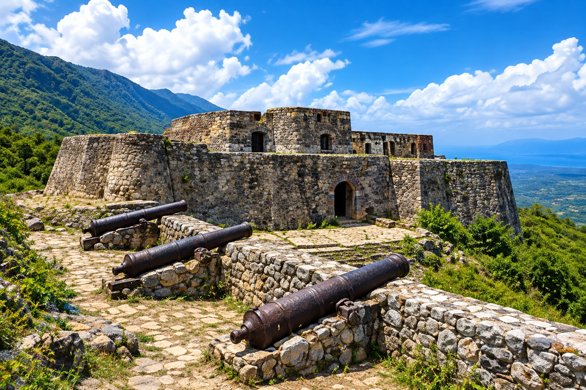
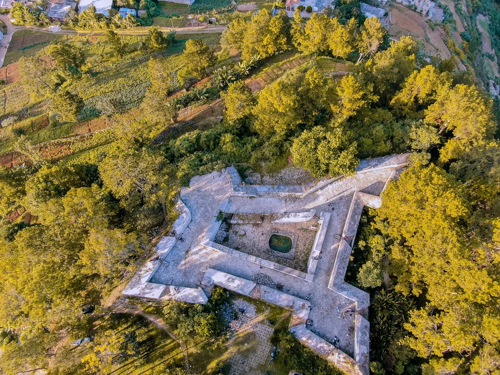
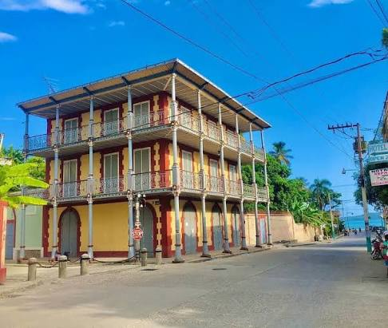

Citadelle Laferrière

Construit au 19ème siècle par le roi Henri Christophe, ce fort massif de pierre domine fièrement une montagne verdoyante pour protéger la nation naissante. Au pied de la forteresse reposent les ruines grandioses du Palais Sans-Souci.
Je veux visiter🛫Fort Picolet

Érigé pour protéger la baie du Cap contre les flottes ennemies, ce fort côtier est directement intégré dans la roche surplombant l'océan Atlantique.
Je veux visiter🛫Fort de la Crête-à-Pierrot

Cette fortification rectangulaire est le symbole de la résistance héroïque des troupes haïtiennes lors du célèbre siège de mars 1802 contre l'expédition française.
Je veux visiter🛫Môle Saint-Nicolas

Connu comme le point de débarquement de Christophe Colomb en 1492, la zone regorge de batteries et forteresses coloniales marquant son rôle stratégique dans le passage du Vent.
Je veux visiter🛫Le Marché en Fer

Cette structure historique et commerciale emblématique se reconnaît immédiatement par son architecture rouge vif, ses clochers et ses garnitures vertes.
Je veux visiter🛫Fort Jacques

Bâti par Jean-Jacques Dessalines après l'indépendance de 1804, ce fort d'altitude offre un panorama complet sur la baie de Port-au-Prince.
Je veux visiter🛫Fort Ogé

Construit vers 1804 et nommé en l'honneur du martyr révolutionnaire Vincent Ogé, cette forteresse offre un aperçu impressionnant des défenses de l'époque.
Je veux visiter🛫Centre Historique de Jacmel

Célèbre pour son architecture en fonte importée, ses anciens entrepôts de café et ses ruelles ornées de mosaïques, la ville reflète un héritage culturel vibrant.
Je veux visiter🛫